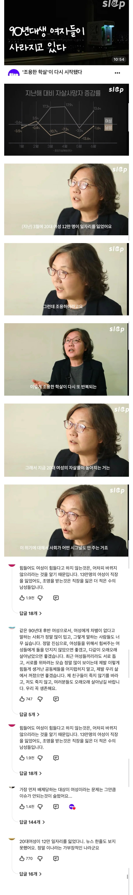

?????????

?????????
"증감률"
90년대생여자들이 메갈 존나많음
니들 인생이 좆박은건 나라탓도 아니요 사회탓도 아닙니다. 그냥 니들이 ㅈ같이 살아서 그런거에요.
81만명이 일자리를 잃었다는데 12만명이 여자면 시발련들아 나머진 랩틸리언이 채워주냐
시발련들이 나치나 북쪽 공산시뻘갱이들이나 쓰던 선동방식을 고대로 쓰네
남자는 원래 많이 죽구요 안죽던 사람이 죽는다니까여?¿°¿
저나이 한녀들이 가장 답없지 않나 ㅋㅋ
걍 90년대생 한녀들이 전반적으로..
통계랑 기싸움 정도가 아니라
아예 일기토를 쳐박네
까잡수고있죠?
사라지든가 어쩌라고ㅋㅋ
씨알도 안 먹힐 통계주작하네. 최소한의 시늉이라도 해야할 거 아니냐
저런말하는 사람들은 왤케 뚱뚱하지?
제대로 된 통계 보여주면 "90년대 남아선호사상 때문에 남자 인구가 더 많아서 그렇다" 이딴 소리 함ㅋㅋㅋㅋㅋ
별좆도아니니깐 조용하겠죠 얼굴 까고 나오셔서 개쌍욕도 못하겠네ㅎㅎ
여자니까 그나마 화제가 되는거라구요...
남자는존나조용한학살이기때문
뭔ㅋㅋㅋㅋ
???: 나를 조선인이라 부르지 마시오. 조선에서 노비는 사람이 아니오!
남한산성 대사였나 그랬는데... 사람으로 카운트를 안 하나보네
군대나 좀 가라